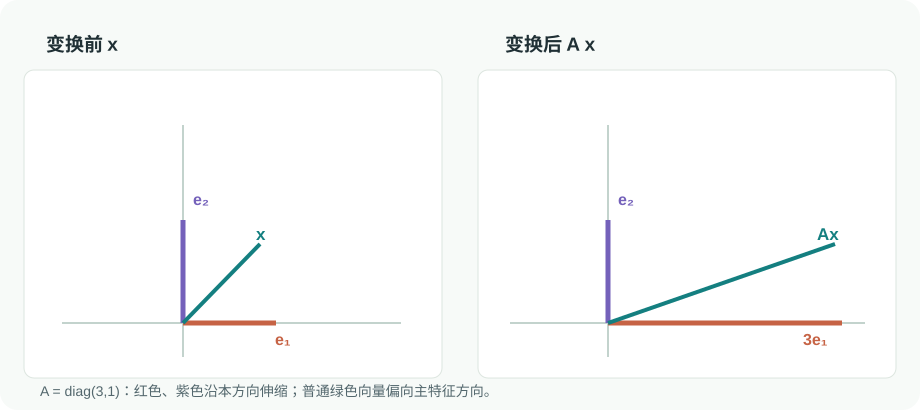
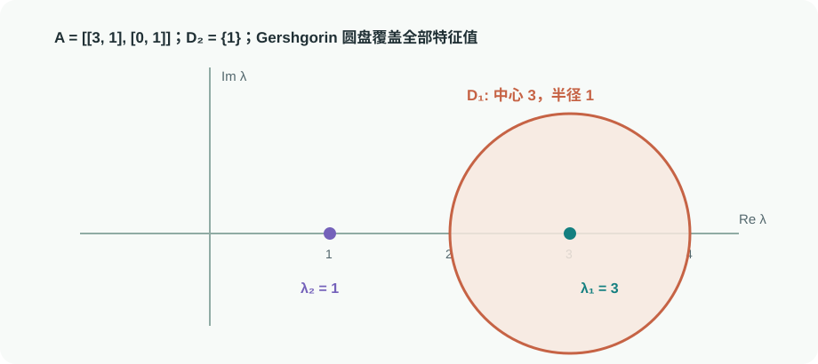

01 / 为什么矩阵会保留某些特殊方向？
大多数二维向量在矩阵作用下会改变方向，但某些非零向量恰好只被拉伸或反转。这样的向量是特征向量，倍率是特征值。这不仅是求多项式根的技巧：从迭代收敛、系统稳定性到矩阵幂的增长，都受其影响。

对方阵 A∈F^{n×n}，只有满足 v≠0 的解才构成特征向量。实矩阵可能没有实特征向量，例如平面旋转 90°；此时它的特征值在复数域中仍然存在。
02 / 特征多项式、迹与行列式
可逆性与特征值问题等价：λI−A 不可逆时存在非零核向量，所以 p_A(λ)=det(λI−A)=0。这个首一多项式在 n 维时次数为 n，根按代数重数计数。请注意与 det(A−λI) 的符号约定不同。
因而 tr(A)=Σᵢλᵢ，det(A)=Πᵢλᵢ（在复数域计代数重数）。如果使用 det(A−λI)，最高次项会带 (−1)ⁿ，次高次项也随 n 的奇偶改变，不能套用上式。
对 A=diag(3,1)，特征多项式为 (λ−3)(λ−1)=λ²−4λ+3，迹 4、行列式 3。
03 / 谱半径与算子范数不相同
谱半径 ρ(A)=maxᵢ|λᵢ(A)| 反映方阵特征值模的极大值。对任意诱导矩阵范数都有 ρ(A)≤‖A‖，但一般不等号可能严格成立。
考虑幂零矩阵 N=[[0,10],[0,0]]，其特征值全为 0，故 ρ(N)=0；但 ‖N‖₂=10。虽然 N²=0，一次作用仍能把某些向量放大 10 倍。因此仅凭谱半径不能界定短期瞬态增长。
xₖ₊₁=Axₖ 对所有初值都收敛到零，当且仅当 ρ(A)<1。若特征值在单位圆上且存在 Jordan 块，还可能产生多项式增长。04 / 不解方程，也能圈定所有特征值？
Gershgorin 圆盘定理把矩阵第 i 行的对角元 aᵢᵢ 当作圆心，以非对角元绝对值之和 Rᵢ=Σ_{j≠i}|aᵢⱼ| 为半径；所有复特征值都位于这些闭圆盘的并集中。

定理可从最大模分量的特征方程推得：取 |vᵢ| 最大的索引，将 (λ−aᵢᵢ)vᵢ=Σ_{j≠i}aᵢⱼvⱼ 两侧取模，就得到 |λ−aᵢᵢ|≤Rᵢ。该定理提供包含区域，不保证圆盘中每一点都是特征值。
05 / 用幂迭代寻找主特征方向
对于 A=diag(3,1)，设初向量 x₀=(1,1)。未归一化的第 k 次结果为 Aᵏx₀=(3ᵏ,1)；归一化后逐渐接近 (1,0)。用 Rayleigh 商可估计特征值，最终趋向 3。
此过程的收敛要求存在严格占优的特征值模且初值含有对应特征方向分量。若改用 x₀=(0,1)，所有迭代都会停留在第二个特征方向，不会找到主特征向量；非正规矩阵或重特征值还会引入更多复杂情况。
06 / 可复现实验：比较谱半径与范数
from math import hypot
# N^2=0，但 N 的一次放大率可为 10
N=((0.0,10.0),(0.0,0.0))
def mul(A,x):
return (A[0][0]*x[0]+A[0][1]*x[1],
A[1][0]*x[0]+A[1][1]*x[1])
assert mul(N,mul(N,(1.,1.)))==(0.0,0.0)
assert hypot(*mul(N,(0.,1.)))==10.0
x=(1.0,1.0)
for k in range(6):
x=(3*x[0],x[1])
q=(3*x[0]**2+x[1]**2)/(x[0]**2+x[1]**2)
assert 2.99 < q < 3.0
print("Rayleigh quotient after 6 steps:",round(q,6))预期结果是一个非常接近 3 的数，按照上述步骤约为 2.999996。这一实验展示了主方向提取；它不是一般矩阵的工业级特征值求解器。
参考与延伸阅读
文中数值均为教学算例，可通过代码复算；说明的数学结论应以完整假设为准。